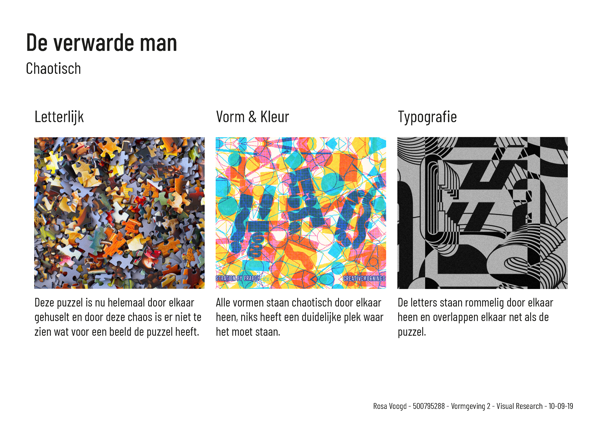
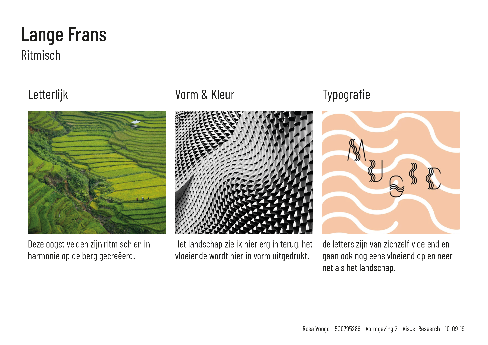
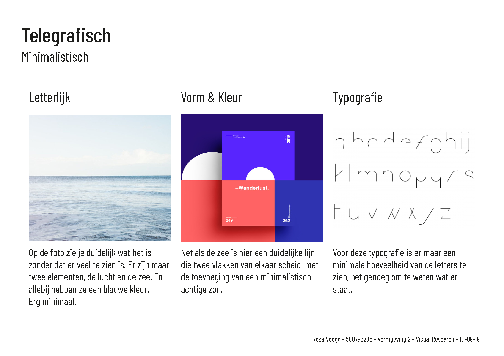
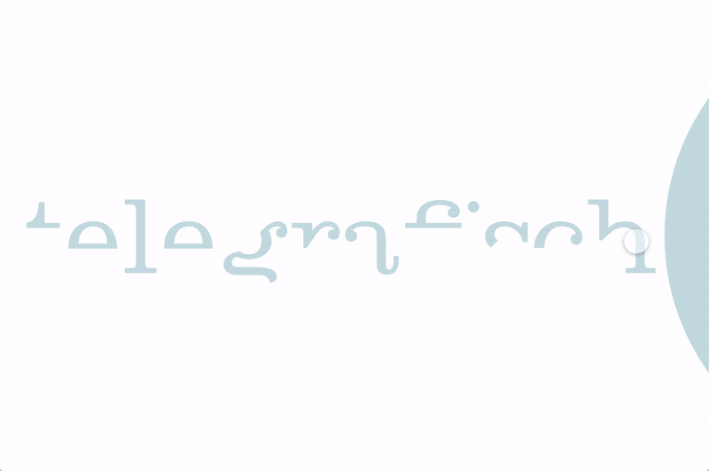
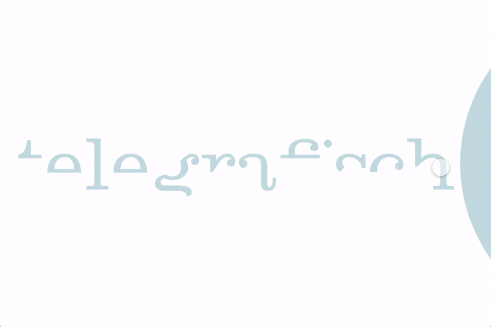
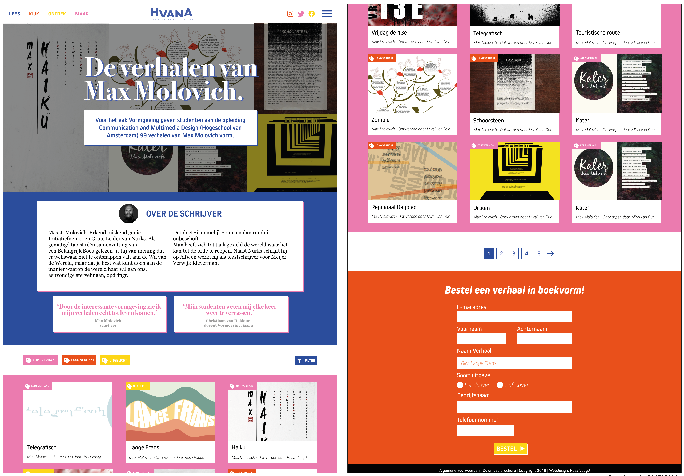
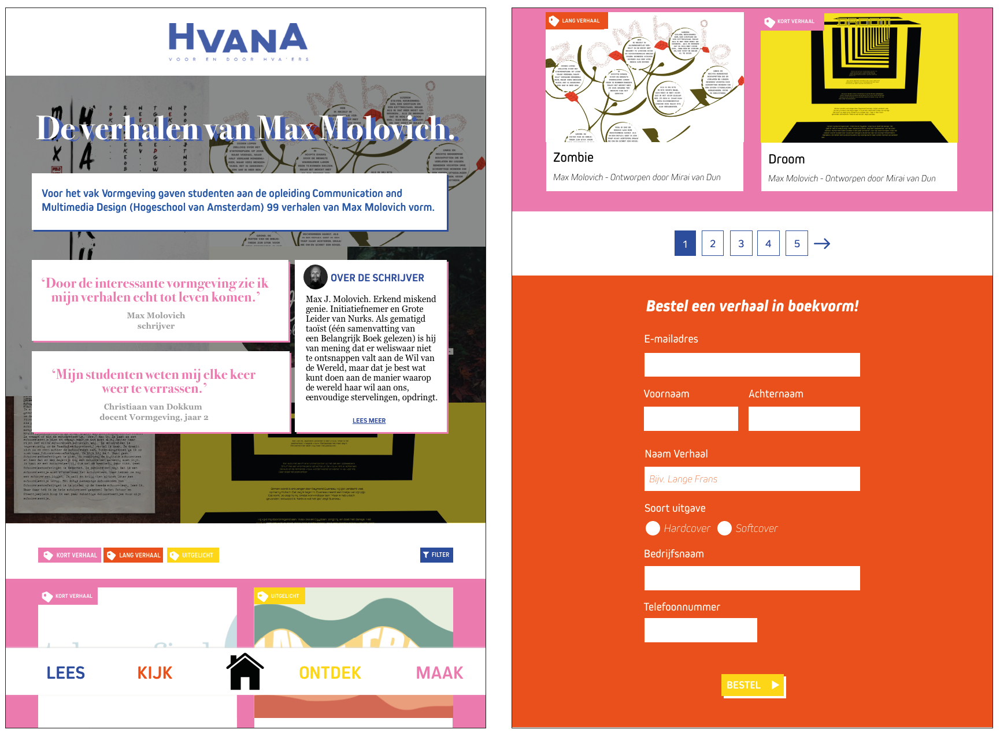
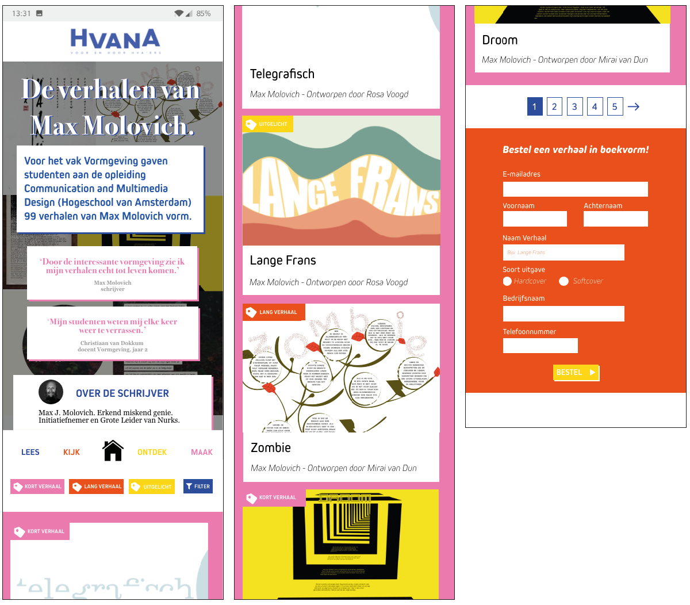

Vormgeving 2 - Jaar 2
Vak beschrijving
Voor het vak Vormgeving 2 was het doel om aan 3 verhalen van Max Molovich een bepaalde vormgeving toe te voegen. Bij de 3 verhalen koos je 3 sfeerwoorden die de sfeer van het verhaal toonde en hiervoor moesten we visual research doen en daaruit ontstonden onze verhalen.
Deliverables
- 3 eigen verhalen vormgeven
- Website ontwerpen in de HvanA huisstijl
- Responsive ontwerp
Proces
Visual Research
Mijn eerste verhaal was De verwarde man, hiervoor heb ik het sfeerwoord Chaotisch gekozen. Iets dat chaotisch, helemaal doorelkaar en eigenlijk niet goed te lezen is.
Mijn tweede verhaal was Lange Frans, dit verhaal had veel ritme daarom heb ik voor Ritmisch als sfeerwoord gekozen, een golvend verhaal.
Mijn derde verhaal was Telegrafisch. Een kort verhaal, erg minimalistisch verteld. Door simpele vormen en letters zie je het verhaal.
Eigen verhalen
 Voor Lange Frans heb ik golvende vormen en letters gebruikt om het verhaal
te vertellen.

Voor Telegrafisch heb ik de letters erg minimalistich gehouden en met maar
1 echte ronde vorm en 2 kleuren gewerkt.
Voor Lange Frans heb ik golvende vormen en letters gebruikt om het verhaal
te vertellen.

Voor Telegrafisch heb ik de letters erg minimalistich gehouden en met maar
1 echte ronde vorm en 2 kleuren gewerkt.
Eindoplevering
HvanA huisstijl web formaat
HvanA huisstijl tablet formaat
HvanA huisstijl mobiel formaat